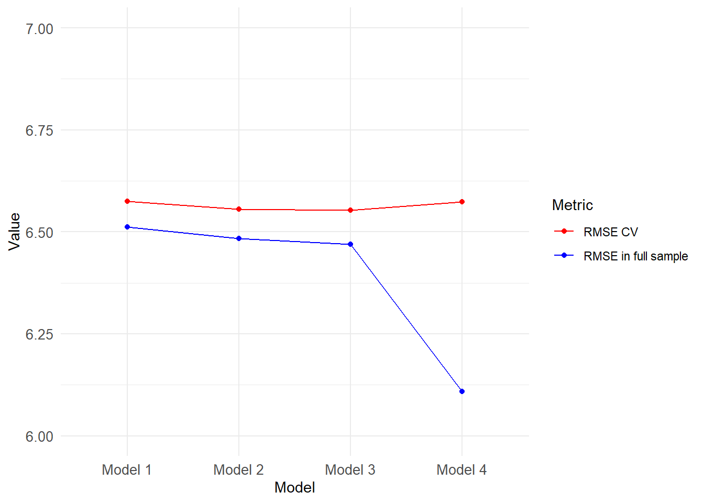

# A tibble: 14 × 2
grade92 n
<dbl> <int>
1 31 12
2 32 45
3 33 80
4 34 49
5 35 45
6 36 52
7 37 56
8 38 18
9 39 250
10 40 109
11 41 25
12 42 17
13 43 43
14 44 6Assignment_1_Wage_PhakphumJ
The task is to build a model to predict hourly earnings. I select ‘Miscellaneous agricultural workers, including animal breeders’ (occ2012 = 6050) to be my population of interest.
Firstly, I describe the variables that will be used in constructing the models. Then, the details of each model are presented along with the performance. Finally, I discuss the obtained results.
Link to code on Github: https://github.com/PhakphumJ/DA3-phdma/tree/main/Assignment%201 (.qmd file may be preferable to the R-script due to better readability.)
Data Dictionary
Original Variables
This section describes the meaning of each variable that will be used in this modelling exercise.
stfips: State codes
weight: Weight of observation in sample (How many observations it represents in population)
earnwke: Earnings per week
uhours: Working hours per week
grade92: Highest grade attended; It is not numerical variable. (e.g. 31 = Less than 1st grade, 32 = 1st - 4th grade)
I will group some education levels above together later.
race: Race (1 = White, 2 = Black, 3 = American Indian (AI), 4 = Asian, 5 = Hawaiian/Pacific Islander, 6 = White-Black, 7 = White-AI, 8 = White-Asian)
# A tibble: 8 × 2 race n <dbl> <int> 1 1 742 2 2 29 3 3 10 4 4 13 5 5 4 6 6 1 7 7 7 8 8 1
I will group some races above together later.
age: Age
sex: Sex (1 = male, 2 = female)
marital: Marital Status (1 = Married civilian spouse present, 2 = Married Armed Foruces spouse present, 3 = Married spouse absent or separated, 4 = Widowed or divorced(Through 88), 5 = Widowed (After 88), 6 = Separated , 7 = Never Married)
# A tibble: 7 × 2 marital n <dbl> <int> 1 1 345 2 2 1 3 3 31 4 4 10 5 5 47 6 6 23 7 7 350
I will group some marital statuses above together later.
ownchild: Number of own children less than 18 in primary family
prcitshp: Citizenship status
# A tibble: 5 × 2 prcitshp n <chr> <int> 1 Foreign Born, Not a US Citizen 284 2 Foreign Born, US Cit By Naturalization 29 3 Native, Born Abroad Of US Parent(s) 6 4 Native, Born In US 486 5 Native, Born in PR or US Outlying Area 2
I will group some citizenship statuses above together later.
ind02: 3-digit NAICS-based industry code
class: Class of worker
# A tibble: 5 × 2 class n <chr> <int> 1 Government - Federal 2 2 Government - Local 4 3 Government - State 5 4 Private, For Profit 793 5 Private, Nonprofit 3
I will group some classes above together later.
I discard chldpres since it is highly correlated with ownchild.
I discard unionmme and unioncov since 99% of the sample have these two variables = 0.
I discard lfsr94 since every observations in my sample are employed in the previous week.
ethnic is also discarded since it mainly describes the ethnicity of Hispanic workers ,which I think might not be very useful. It also contains 8 categories. If included, we would lose quite some degree of freedom.
Generated Variables
The generated variables are:
- earnhr: Earning per hour (This is the target variable)
Race
is_white: 1 if race is white; 0 otherwise
is_black: 1 if race is black; 0 otherwise
Marital Status
marr_abs: 1 if married with spouse absent or separated; 0 otherwise
wid_div: 1 if widowed or divorced; 0 otherwise
nevmarr: 1 if never married; 0 otherwise
Gender
- male: 1 if male; 0 otherwise
Citizenship Status
noncitiz: 1 if not a US citizen; 0 otherwise
natura: 1 if Foreign Born, US citizen by Naturalization; 0 otherwise
Class
- forprofit: 1 if working in private in for-profit private organization; 0 otherwise
Education Level
than7nodip: 1 if 7th - 12th grade but NO Diploma; 0 otherwise
HS_GED: 1 if High school graduate, diploma or GED; 0 otherwise
Col_ND: 1 if Some college but no degree;; 0 otherwise
asscd: 1 if Associate degree; 0 otherwise
Bach_more: 1 if Bachelor’s degree or more; 0 otherwise
Minimum Wage
The sample comes from 50 states. While each state may have different social and economic environment, we would lose significant degree of freedom if we use stfips. To compromise, I opt to use data on minimum wages of each state instead. I use published data on the government website and asked ChatGPT to clean it 1.
- Minwage: the minimum wages in each states in 2014.
Model Building
I use correlations between the target variable and features to help ordering which variables enter into the models.
correlations
uhours -0.05372761
age 0.21498132
ownchild 0.02653381
earnhr 1.00000000
is_white -0.02084317
is_black 0.10304552
marr_abs -0.05684245
wid_div 0.11312369
nevmarr -0.14386276
male 0.04438285
noncitiz -0.15335406
natura 0.07658367
forprofit -0.10343138
than7nodip -0.17904794
HS_GED 0.14526462
Col_ND 0.05340190
asscd 0.05907553
Bach_more 0.10782732
Minwage -0.02225044The specification of each model is:
Model 1: earnhr = f(age, marr_abs, wid_div, nevmarr, noncitiz, natura, than7nodip, HS_GED, Col_ND, asscd, Bach_more)
Essentially, age, marital status, citizenship status, and education level are used. These features have the highest correlation with earnhr
Model 2: Model 1 + (uhours, is_white, is_black, forprofit)
which means adding working hours, race, and class of worker to Model 1 These variables have the next highest values of correlations.
Model 3: Model 2 + (male, ownchild)
adding gender and number of children to the model.
Model 4: Model 3 + (Minwage, ind02)
accounting for the variation in minumum wages across state. I added ind02 at the last step because it significantly increases the number of parameters to be estimated
The explanations potential relationships between these predictors and the target variable can be found in the appendix.
Each model is estimated by OLS. The coefficients are estimated by both using cross-validation (5-fold)2 and using the whole sample. RMSE and BIC are calculated and shown in next section.
Performance
| RMSE in full sample | RMSE CV | BIC in full sample | |
|---|---|---|---|
| Model 1 | 6.511597 | 6.575314 | 5331.051 |
| Model 2 | 6.484137 | 6.555485 | 5331.831 |
| Model 3 | 6.469595 | 6.552449 | 5330.327 |
| Model 4 | 6.108176 | 6.573758 | 5414.307 |

Discussion
From Figure 1, it can be seen that both RMSE from using full sample and cross-validation initially decline as the number of variables in the model increases because adding more features increases the goodness-of-fit of the model. However, when 36 coefficients are added to model (from Model 3 to Model 4), the problem of overfitting arises, as reflected by the increasing RMSE from cross-validation. Even though the added features improve the in-sample goodness-of-fit, the overly complex model captures the noise and idiosyncrasies from the training sets which may not be there in test sets (or live data). This exercise highlights the consequence of overfitting the model.
The BIC and RMSE in full sample also reveal interesting information. Going from Model 1 to Model 2, while the goodness-of-fit may improve, the BIC indicates that the gain was small such that it is outweighed by the penalty from increased number of parameters. This imply that the three variables added in Model 2 may only marginally improve the fit. While adding 36 more features to model (from Model 3 to Model 4) may significantly improve the in-sample fit, but it also come at a significant cost, which may be even greater than the gain, as reflected by in the increase in BIC.
Drawing from the results in Table 1, Model 3 is the best model among the four models in predicting hourly earnings of miscellaneous agricultural workers since it has the lowest value of BIC and RMSE from cross-validation.
Appendix
Short explanations of potential relationships between the predictors and the target variable
Age: When workers become older, they may become physically weaker and have lower productivity. Hence, they may receive lower wages.
Marital Status: Marital status may affect productivity and wages through mental health.
Citizenship Status: Non-citizen workers may be at disadvantage as the employers may face higher administrative costs when hiring them.
Education Level: Education level may increase productivity and availability of outside options of the workers.
Working hours: Workers who work longer hours may be viewed positively by employers. They may also work longer hours to compensate for lower wage rates.
Race: There may be racial discrimination among some employers.
Class of Worker: For-profit private organizations may pay higher wages to their workers since they may be more profitable.
Gender: There may be gender discrimination among some employers. Female workers may also need to allocate more time to taking care of their household.
Number of Children: Children may affect productivity of their parents through mental health and fatigue effects.
Minimum Wages: Workers and employers may use the minimum wages as a reference when negotiating.
Industry: Each industry may have different economic environments and prospects.
Footnotes
The data is from :https://www.dol.gov/agencies/whd/state/minimum-wage/history; the recorded process with ChatGPT can be accessed by: https://chat.openai.com/share/dd30493f-c0f8-4b6e-ba9e-ea05e228c719↩︎
The code for performing 5-fold cross-validation is modified from the draft code from ChatGPT. The conversation can be accessed by: https://chat.openai.com/share/9c5a88fd-34b0-42a3-84cd-4e3a889d357d↩︎
The plot is created by using code written by ChatGPT. The conversation can be accessed by: https://chat.openai.com/share/a92f067a-67b3-42c7-94e7-735ab247963f↩︎